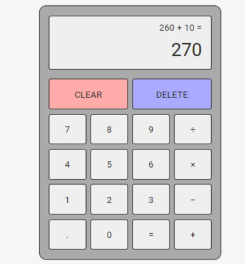
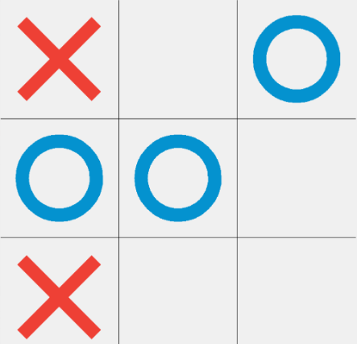

Hello! My name is Aaron Siby and I am a Second Year Software Engineering Student at Western University. I mainly specialize in Java, HTML and CSS. I strive to improve myself everyday through learning and creating new projects. I am interested in the field of machine learning and AI and am always happy to chat about the latest updates! Feel free to connect with me and Lets Talk!

Created a simple GUI calculator using the Swing framework, allowing users to perform basic arithmetic operations like addition, subtraction, multiplication, and division. It features buttons for digits (0-9), operators, decimal points, and control functions (clear, delete, negate), all laid out in a structured panel.

Implemented a simple Tic-Tac-Toe game using the Swing framework for the graphical user interface (GUI). It features a 3x3 grid of buttons that players can click to place their "X" or "O" symbols, with a label displaying whose turn it is and announcing the winner when the game ends. The game randomly decides which player goes first and checks for winning conditions after each move, highlighting the winning buttons and disabling further input when a player wins